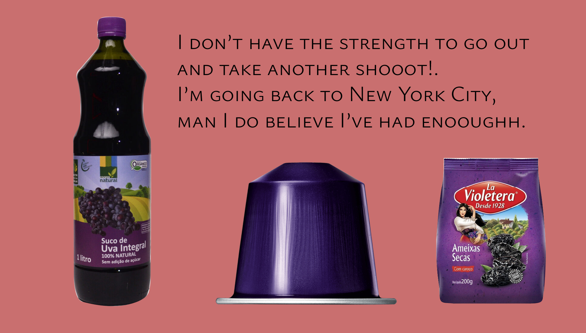

Maybe not so much, we plan to reanimate this. ENA is gonna make a movie review section, with iron theming. I plan on making the trans-dex. I wonder if I should change the look of the website and leave this one archived.
Dang, she was so happy with getting a new name she named her website Lili's Corner. It's a bit sad in retrospect, because Cecília is just the body name now, due to the old host being gone.
Members now are Cora, ENA, Lou, and me of course. We've been working on getting a diagnosis, for OSDD or for something else, whatever may it be. I just know it's not schizofrenia.
My mother thinks it's autism, which is the most frustrating nonsense you could say to me at a moment like this. I am autistic, but is it enough to make me dissociate in such fantasy? I doubt so. The doctor and therapist on the other hand said it was anxiety from the gender transition. The same goes to that.
The thing that makes me skeptical of having a diagnosis as serious as one of a dissociative disorder is that our memories seem to be the exact same, just with diferent enphasis at certain moments, and nothing traumatic. Hell in desperation I've asked about this stuff on Reddit.
If I happen to put this live I don't know for how long it would be.
I wonder if it is even possible to be a system if me and Lou weren't around before this year. Just Cora and Cecília. It sounds fake.
~ Mimi (I think)
April
22nd of april 2026 Headache at class, again — Mood: Depressed
Regardless if I want it or not, the mind divisions stayed. I feel terrible, because it has been
almost three months of this, but the psychiatrist says it's just anxiety, and he may be right.
But it sucks living like this, despite me liking my headmates for the most part.
It just shouldn't be that way... Cora is learning JS, so this site may go through changes as we
learn. At least there's little to no amnesia. She's making album reviews on what may or may not turn
into a new section here.
Meanwhile I'm just tredging through college. I had to make my branding identity in this state, which
was no fun. The free time from not enrolling on much of anything gave me time to watch two anime:
Shikanoko Nokonoko Koshitantan and Land of the Lustrous. The second one is beautiful, I highly
recommend. I relate alot to Phos.
March
11th of march 2026 Bored at class, Tusk review — Mood: Fiine still
This album feels so long, but that ain't necessarily bad. The songs are great and varied, Stevie's
voice is incredible in Sisters of the Moon and Angel and Lindsey Buckingham sounds wild and
dangerous. The use of synths, crunchy electric guitar and his vocal delivery are everything Law and
Order wanted to be, even if less paranoid, which is strange for being an album beforehand.
The mix takes the cake. Over & Over, the album's opening has a beautiful sound with the raw guitar
and punchy drums, combined with actually smooth keys. It doesn't sound like something that should
work, but is perfectly natural when listening.
I talked shit at Law and Order, but it's like Extra Texture for me because something in there reaches
out for me, against my will. It sounds like a tired human, so of course it attracts me (#1 Blonde on
Blonde fan).
I will make a review on The Blue Horizon Sessions, because Christine Perfect needs some love, though
she doesn't stand out here.
10th of march 2026 Set square in 4 sides 4now — Mood: Fiine
I've been struggling with seeing myself as more than one person, somehow? It's very confusing and I
lose all my energy from thinking and living the day to day, which souldn't be trouble normally, as
it wasn't.
It would be me, Lili, the other fronting woman Ceci, the ungrounded Cora and Julia, who I still
can't wrap my head around. It all feels very real, even as I lay it down, but I constantly see
myself on the cycle of feeling like it's completely fake and I already got over it, to
being in too deep in this with no escape possible.
And the songbirds are singing
Like they know the score
And I love you, I love you, I love you
Like never before
And I wish you all the love in the world
But most of all, I wish it from myself
08th of march 2026 Exercise took out all my strenght — Mood: Waaaaahhh
Thank god for caldo de batata

07th of march 2026 List of shit I like, by weird Lili — Mood: Keep on
chooglin'
I like the fresh wind, that comes right before the rain. I like boots, that give me power on the
times of
need. On the same vein I want thicker legs so that I look less wide on top and have even more visual
confidence.
I like my dogs and like watching "My Cat From Hell", where you hope the cats do better and see that
come
to fruition. Hooray for cats, hooray for Jackson Galaxy and for shitty TLC shows but not all shitty
TLC
shows cause some are just nasty and prejudiced and whatever.
I like my mother and my father. I like my brothers and people I talk to in college. I LIKE YOU READER
LET'S BE FRIENDS MUAHAHAHA!!
February
27th of february 2026 February’s Youtube rundown! — Mood: depressed
This month my head was too caotic for me to express here, and I came back from vacation, so I haven't
posted anything. BUT I did some layout rennovation which will soon be seen!
Abigail's writing just keeps getting better. She mixes open interpretation of the tracks with
contextual ones. And oh does she search to find that context, she makes a cobweb with reviews of
the
time, news coverage and biographers and it gives great death to the first half of her videos.
And a repeating theme here is that I will aways click on videos were people rock good outfits,
and
she does it every time.
I don't know how to feel about this channel. There's joy to be had with everything she
acomplishes
and the more silly stories, but we linger in some dark places for quite a while.
I really admire that she takes the time to inspire people by sharing such personal stuff. By
inspire
I don't mean necessarily the deepest stuff all the time. If you can bring some laughs or whimsy
in
someones life you're already bringing them some inspiration.
To end it, she deserves all the love in the world and I love her sprites (there's a bunch of
differents art styles she assumes on the videos).
Wow, another brazilian transfem pokemon fan who writes stuff in English, named Cecília! I only
discovered her channel after choosing my name, so she hasn't influenced that. But she did make
me
like Pokémon more.
Her channel is great for its essays (love the new megas analysis and the marxist ones) and
gameplay
videos, which are very lighthearted fun! Also, her fashion sense is stellar.
I don't have much to say, she's just cool.
1st of february 2026 My summer vacation — Mood: Overheating in a budget hotel lobby (flight cancelled).
The good with going out with your family is that the budget gets a little larger, and
the food
better. That was the highpoint for me, it's worth the stress of being enclausurated with the same
beings.
We went to the beach, and it felt good getting that tan and ocasionnaly diving in the water. Despite
my
initial
fears, my newly launched boobs weren't stared at — they were tiny enough. The reason why took the
risk
is one, I
don't wanna buy a bikini that won't fit me later, and two, people would indeed stare if seemingly a
man
wore
such a thing. I apreaciatte geting a tan over them.
First we made a stop at the Praia do Amor (Love Beach) and then the final destination, João Pessoa.
My
parents
were flirting with moving there, and it would be great, the lack of traffic would hopeffuly make
them go
out
more.
I only went to one museum — how shocking! It was the Museu de Artesanato Paraibano (Paraiban? Crafts
Museum)
and it was awesome. It wasn't overblown with text while also not lacking context, I will show
pictures
of some
cool stuff in there.
23 of january 2026 Jeans and romance — Mood: accepting.
I developed a recent adoration for jeans. I just feel more grounded in reality wearing
them, I
stomp on the ground firmly as a cowboy. (Also felt as if I was participating on the trashy Bob Dylan
movie I
just watched, on that fake country world.)
I was wearing the standard type when I first kissed, shy as I was, and he was wearing the baggy type,
as
if
floating a bit from the reality I was used to (the smoke surrounding helped form that picture). I
came
in so
unsuspicious of his hangout invitation, the spot he picked and the way he looked at me should have
lead
me right
on that it was to be a casual date. Even though I was a supposed progressive at the time, the
suggestion
he
posed on me really threw me off, at first I even rejected kissing him (I never considered kissing
anybody)! But
then I changed my mind. I was fixed trembling on the ground as he hovered over me, but it was fine
anyway
despite the nerves.
Everybody I hear from seems to be embarassed by their first kiss, but I mostly have a fond memory,
the
only
regretful part being disappearing afterwards from his life, never calling him again. After the
moment
was over,
I felt unnatural for kissing not only a man, but a friend (that's totally fine by the way, I still
have
some
homophobia that I need to drag off my head).
I definittely wanna kiss someone again.
19 of january 2026 Sightseeing (online) — Mood: 1 AM.
Everybody should play Summoned (on the BitsyBrowser on baz’s
PC).
18 of january 2026. January’s Youtube rundown! — Mood: exhausted (don't
know why, currently covered in my grandma’s crochet blanket).
While scrolling Youtube (as one does) I happen on a lot of content. But in the
middle of that,
I find videos that are genuine and well researched (or just cool somehow). I wanna quickly gush over
the month’s
finds.
Collabs have been directing me to many nice spots on the site. On Hazel’s video
Some Weird Old Video Game & Anime
Fansites she
appears with a story of one of her many experiences with bootleg cartridges, common with her
(Thor’s)
channel’s theme of getting deep into the gaming trenches, exploring forgotten and obsure games.
The will to
play japan only games by guides and Google Translate is outstanding. Also the overblown graphics
are really
charming.
She may be behind the FNAF plushie series, but there are many other cool videos
under her
belt! YoutubePoops are a dying breed, but she’s at it still, mostly on her second channel.
What draws me in the most is her comedic timing, especially with her mainstate character, The
Brainiac. (And her cute drawings of course!)
He tells some fun stories, many even outside the web, in contrast with the many
Cybershel
likes I watch. I really enjoy the history insertions, especially because it creates a proper
basis for
understanding the juicy parts. Sometimes I can’t tell how to fact check what he is saying,
especially in his
videos about China at which he pulls his personal staying there. Regardless, it’s entertaining
to watch and I
really enjoy the topics, as random as they may seem (it just works with the rest).
Now I think houses are cool — aand I like history lessons.
15 of january 2026. I've been gaming! — Mood: happy despite bad stomach.
Yume Nikki is what took over my mind, but I poked around at other stuff, mainly
Super
Mokey Ball. What a brilliant game! Level design brings so many possibilities, and I finally found a
game
that
both me and my brother enjoy. He will look at me, say Monkey Target and my PC will be ready to
action —
I don't
get lazy with such suggestion. He loves GonGon due to his weird expression and sound (which is so
muted,
it
feels like he's dying, adds to the fun)
Another one I've been hitting with is Mario Kart Double Dash, which is surprisingly hard! I was the
queen
of
Mario Kart 8 with my friends, despite not owning the game, but today I've grinded for 2 hours the
star
cup in
100C, but couldn't get past a bronze. But that ain't a complaint, the Mario Kart Luck is barely
present,
my
skills that need to improve (and will). It took me some getting used to the character exchange, but
that
part is
down now.
How great it is to have a laptop that can take on some emulation!
12 of january 2026. Spoilers for Yume Nikki. — Mood: weird, but happy.
This game really tackled my brain left to right, I've never changed my playstyle before
midway
through a game. Just walking around aimlessly and stabbing people not only was not satisfying but
felt
super
isolating. Thus I started trying to memorize how levels worked so I could find again the deeper
areas,
after
learning that there are double the amount of effects I thought.
But not only in gameplay, but the end got me by surprise. I should have seen it coming, Madotsuki
always
begins
her dreams at the porch (I think that's the translation for varanda?). But the reason for her
suicide is
what
stuck in my head. Initially I thought reliving her life, the good and the bad, overwhelmed a already
clearly
anxious person, who only plays one game, sleeps and never leaves her room. I also thought she had
autism, but
that's just me projecting as usual, the common speculation of abuse makes way more sense for her
social
behavior
(and the dream knife!).
The common interpretation, which actually makes way more sense than what I initially pictured, is
that
she got
to the edge of her dreams, and then felt empty. Feeling empty is way worse than sadness, so she just
locks her
memories in those eggs and take the jump for it. Hearing this made me remember that sensation,
though
tankfully
I'm not living a depressive episode everyday anymore.
A reason for me staying alive is the fear of disapoiting or making my parents sad. That's not a
sustainable way
to get someone out of the edge, but that's what was on my mind (nobody noticed anything at that
time,
despite me
trying to show it subtly). Madotsuki doesn't even have that. The possibility of sleeping seemingly
infinite
realitys was what was keeping her in the world, and by the end that was gone — there was no outside
stimuly to
keep that going.
I tend to not care for piecing together lore in abstract media because I think it loses the point,
but in
here
I think there are interesting interpretations. The hands all over the place indicates sexual abuse
to
many, but
I feel like it could be due to not wanting hugs or any proximity after a traumatic experience, or
maybe
that way
of comfort is just not ideal. I believe in the latter because of the limbs world, where there are
legs
of her
stature, moving mouts and eyes. It may just be a little much to absorve at once (there goes the
projection
again...), especially when you ain't doing too well. Thus she locks herself in a comfy room, but as
she
stays in
bed the depression gets worse.
I couldn't make my thoughts on the game concise, I think there are multiple stories here. So on
another
topic,
I really vibe with the ideal vs the imagined self thing that NitroRad pulled in his video of the
game. I
straight up drew representations of myself in these separete manners when I was a kid (I barely draw
anything
nowadays). He also talked about body dismorphia in general relating to this, the fat effect, the
gore,
the
monsters and bathrooms. Hell, she maybe didn't even feel comfortable walking, if that multi jumbled
mess
static
of the girl is anything to go off. I highly recommend watching his video on the game, he manages to look at
things in a
lighter tone overall without being tone death, it's very refreshing.
4th of january 2026.
Happy New years hipotethical readers! Great expectations for this one for once, but time
is
continuous so it's gonna part off from the 2025 basis. Indicating the parental relation from the two
years my
country is kicking off with another metanol crisis, now in the state of Bahia. Hoping here for the
best
and we
are more prepared now with antidotes, which the state has already been given from the Public
Ministry,
so things
should get better.
My parents residence has been lovely given the name of Monster House, cause a third of the machinery
there
broke at some point last year, and the inhabitants got bruises from various sources. But hey, four
days
in and
only a shard from the chandelier split, and my father even managed to glue it together so it's as if
nothing
ever happened!
I'm wondering if I should continue my guitar lessons. I honestly gave it a good, year long shot, so
I'd
leave
it without any regrets. I enjoy them actually, the things holding me back are just money
conciousness
(cause
we're on a razor thin budget surprisingly) and my lack of will to train at home, which slows down my
growth as a
player. But learning the play styles, music theory and to hold concentration on the beat have been a
real joy,
even if at times I'm too tired to profit of the classes (design school does that to you).
I really wish I had something to say about the 36th Bienal de Arte, but I've got nothing, despite
pratically
living there. One thing I have of note is that what makes me go to art exhibits that much is the
quietness of
those places, and the fact I can get distracted thinking about the artwork that I generally don't
understand.
It's not like I'm super touched, I just find it autism friendly. So countering all expectations the
Bienal
turned out to be one of the noisiest places I frequent. Maybe at this point I actually like going to
art
exhibits, cause that shit definitely ain't autism friendly, despite the sensory rooms, at which some
guy
expelled two couples from cause they didn't look autistic enough. The old couple admited to just
wanting
a
resting place, but this felt very unwelcoming so I left.